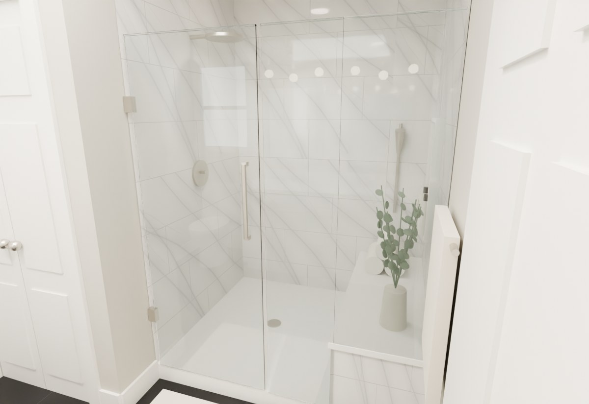
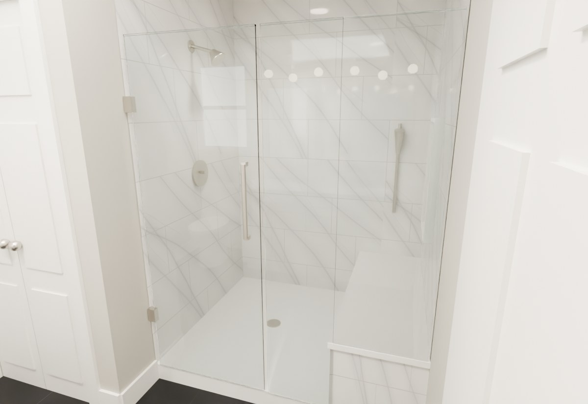
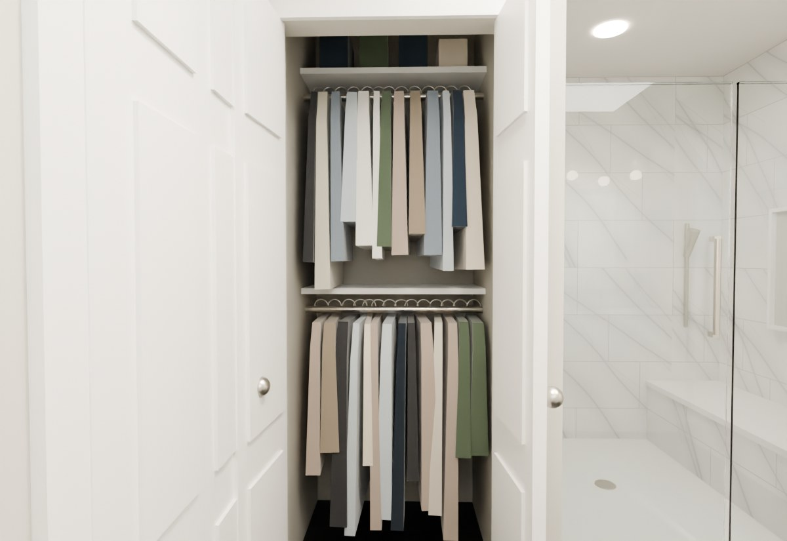
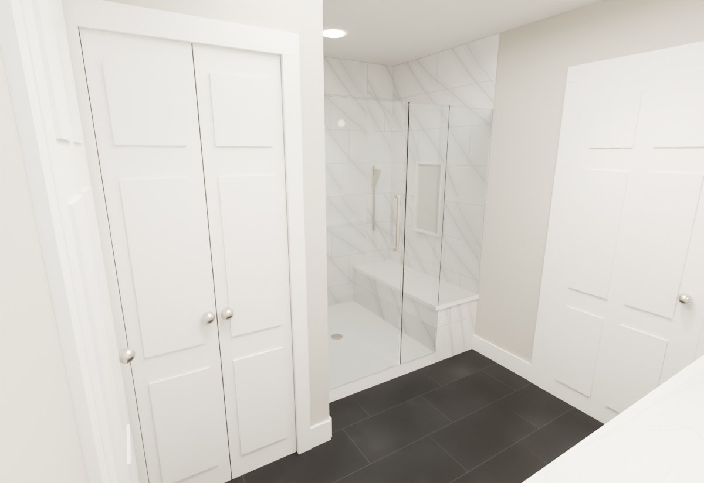
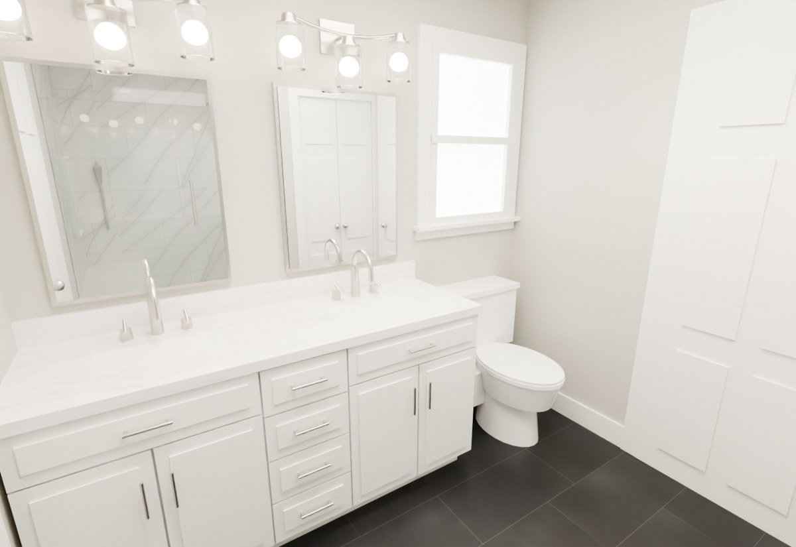

Interactive
Walk through the new bathroom
Look around and walk the room in 3D. Open the closet doors and turn the styling on and off.

The Shower
Walk-in shower with a built-in bench
Polished 12×24 white and gray tile with light veining, laid horizontally to the ceiling. A tiled bench with a niche above it, a handheld shower by the bench, a rain head, and frameless glass with a door.

Shower fixtures
The valve and rain head sit on the end wall across from the bench, with brushed nickel trim and a recessed light overhead.

The new closet
The old stall shower becomes a closet with 6-panel double doors, a top shelf, and upper and lower hanging rods.

The Room
How it all comes together
Slate-look 12×24 LVT floor, soft warm gray walls, 6-panel doors, and recessed lighting.

Your vanity wall
Your current double vanity, faucets, mirrors and lights stay as they are.
Selections
What's in the design
- Shower tile
- Polished 12×24 white and gray tile with light veining, laid horizontally to the ceiling
- Shower
- 42×48 shower base, tiled bench, 12×24 niche, rain head and handheld, frameless glass with door
- Floor
- Slate-look 12×24 LVT, running parallel to the vanity
- Fixtures
- Brushed nickel
- Walls
- Soft warm gray paint
- Closet
- 6-panel double doors, shelf, double hanging rods
- Lighting
- 3 recessed lights: 2 in the main room, 1 in the shower
- Staying
- Double vanity, faucets, mirrors, vanity lights and toilet